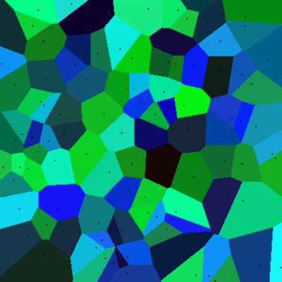
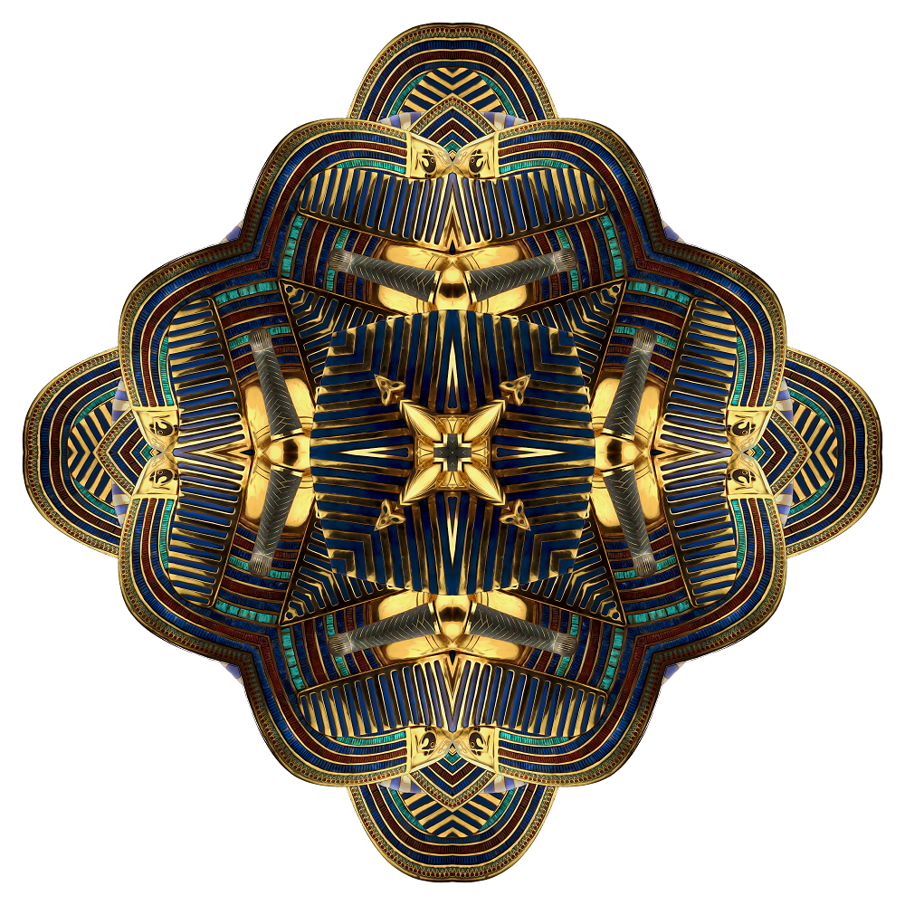

Random Composition


Randomly composed functions on [-1,1] with heights interpretted as colors.
Zippy Tetraquad
A random quadrilateral partition of an ellipse. Colors are vertices of a tetrahedron inscribed in a sphere inscribed in RGB space. Colors are distributed based on Zipf's law..
Impressions of a Cow and Barn


A barn and a cow on a hill colored with splotches based on motion.
Tiled Paths

Random tiles with quarter circle paths.
Crosses

Crosses composed of randomly placed arcs of curves with imposed symmetries.
Swarm

The paths of a swarm of 100 particles chasing a target.
Circle Grid
Edges of a Cube
Slipping Boxes
Crystal Outline
Circlefied Crystal Outline

Squiggles
This image is inspired by the artwork of Lee Krasner. It is composed of millions of line segments.
Ball of Fuzz
The paths of thousands of particles beginning at a common point and moving under the influence of random forces.
Packing

These images depict randomly packed squares and circles.
Random Rectangular Partitions
These images depict random rectangular partitions similar to paintings by Mondrian. The image on the left uses random colors selected from a small palette of colors. The image on the right uses colors taken from van Gogh's Starry Night.
Reaction Diffusion
Reaction-diffusion equations were invented by Alan Turing to model the natural growth of patterns. The first image is generated with one system of reaction-diffusion equations. The second image combines multiple systems with color. The last image adds varying levels of rotational symmetry.
Maze

Roman architects created complex maze patterns by "gluing" together four simple square mazes to make one larger more complicated maze. The process could be repeated to make more and more complex mazes. In 1890, Peano used a similar process to create a space filling curve. Here is a circular maze based on the same idea. The black curve is a single connnected loop that does not intersect itself.
Voronoi Diagrams

A Voronoi diagram begins with a set of special points, each of which has an associated color. Each pixel in the image is colored with the color of the special point to which it is the closest. The first image uses 100 randomly placed points with random colors. The second image uses the same points and colors but calculates distance assuming it is possible only to move up/down or left/right. The third image takes colors from van Gogh's Starry Night.
Snowflakes

Snowflake patterns with varying symmetries and densities.
Kaleidoscopes


These pictures include randomly placed images with imposed symmetry.
Symmetric Hair

Noise is a continuous function of random values varying between -1 and 1. This image depicts the paths of several particles with random motion (determined by a noise function) and imposed symmetry.
Hair Mat
Noise is a continuous function of random values varying between -1 and 1. This image depicts the paths of thousands of particles with random motion determined by a noise function.
Symmetric Cow Spots

Noise is a continuous function of random values varying between -1 and 1. These images use a noise function to generate cow spot patterns with imposed symmetry.
Julia Sets
This video draws the Julia Set for each point in a trip around the main carioid of the Mandelbrot Set.